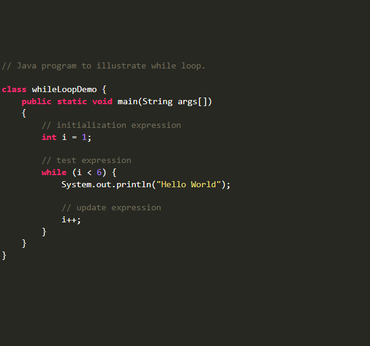

A instrução WHILE é utilizada para repetir um bloco de instrução por um período determinado ou então, enquanto uma condição for verdadeira. O cabeçalho dessa instrução é mais simples, logo, faz da mesma muito mais flexível e isso nos proporciona um leque muito maior de utilizá-la.
